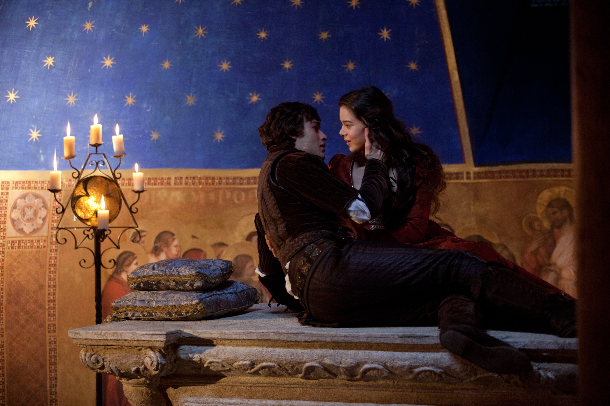
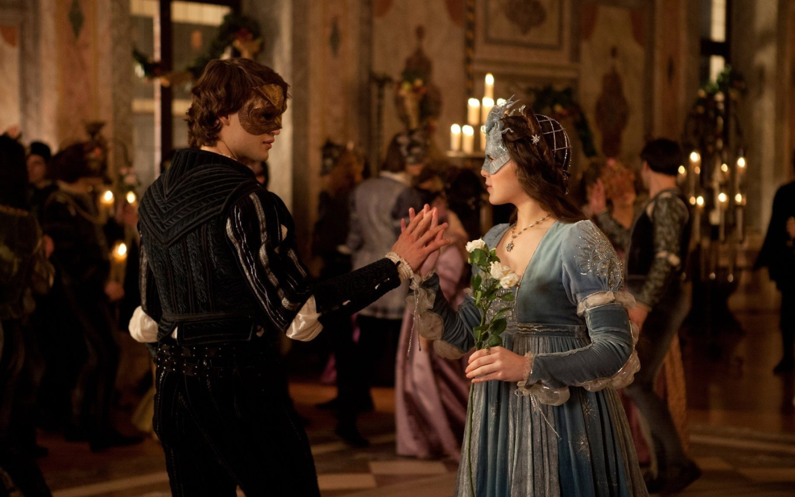
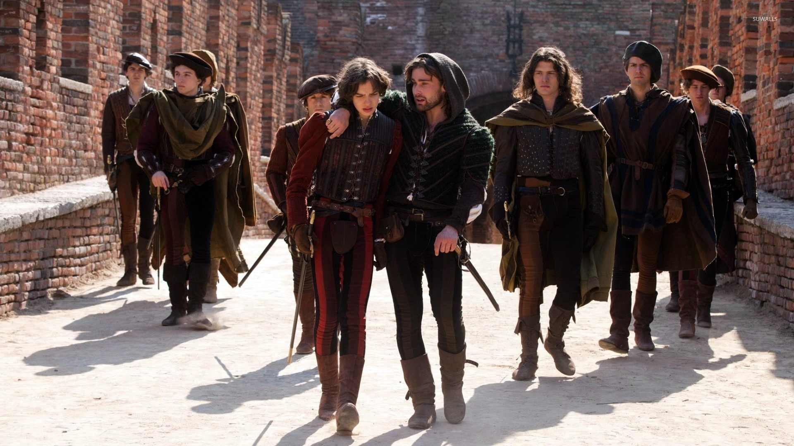
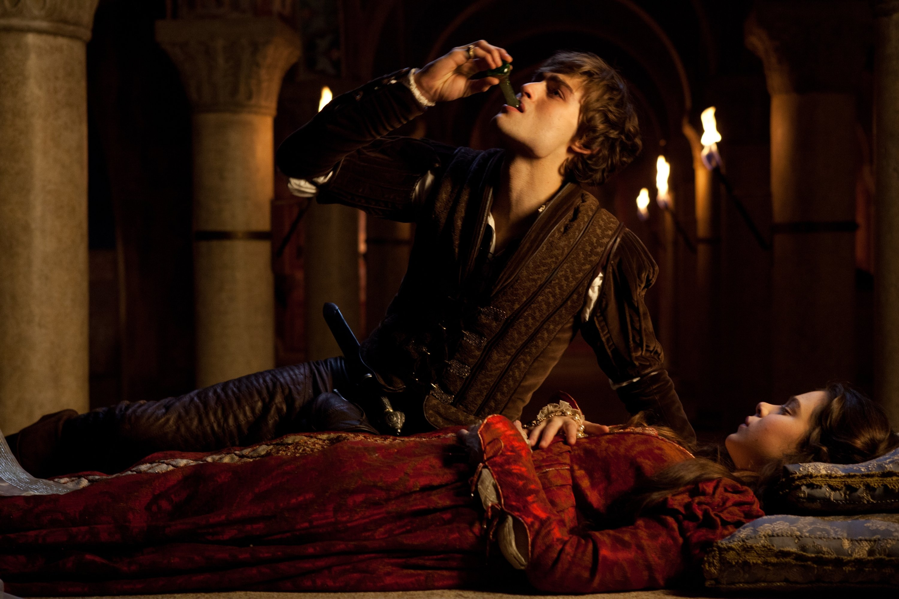
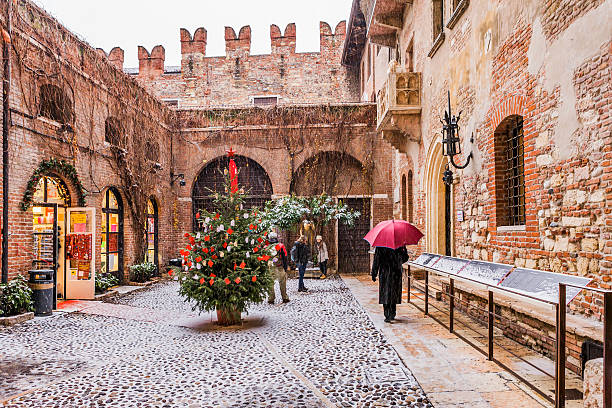

In the sun-washed city of Verona, two ancient and noble families—the Montagues and the Capulets—were locked in a bitter, unending feud. No one remembered how it started. Pride, insult, blood—perhaps all of these. What was certain is that it poisoned everything: the streets, the homes, even the hearts of the people.
And in the middle of this darkness, two souls collided.

Romeo Montague was a young man of emotion and wonder. He wandered through life in search of something deeper—writing poetry, dreaming of love, longing to feel truly alive. At the story’s beginning, Romeo was heartbroken over a girl named Rosaline, who did not return his feelings. His friends, Mercutio and Benvolio, eager to pull him out of his melancholy, suggested they sneak into a Capulet masquerade ball, where beauty and distraction surely awaited.
Meanwhile, in the Capulet household, Juliet—just fourteen—was being prepared to meet Paris, a wealthy suitor her parents hoped she would marry. She was obedient, curious, and strong-willed, but unprepared for what the night would bring. She had never loved before. She did not yet know the fire that could live in a glance.

That night, under candlelight and music, Romeo’s eyes found Juliet—and nothing would ever be the same. He approached her without knowing her name, without knowing she was the daughter of his family’s enemy. She spoke with grace, and when their hands touched, the world around them vanished. It was not simply attraction. It was recognition—of something older than both of them, as though their hearts had been waiting for this moment.
Only after their kiss did they realize the cruel truth: Juliet was a Capulet. Romeo was a Montague. Their love was already forbidden.
But hearts in love do not care for bloodlines.
Later that same night, unable to stay away, Romeo climbed the stone walls of the Capulet estate and found himself beneath Juliet’s balcony. There, hidden by the night, they confessed their love again—more boldly, more beautifully. Juliet, though afraid of what the world would think, did not want to deny what she felt. Romeo swore he would do anything to be with her. In the soft silence of the garden, they vowed to marry.
With the help of Friar Laurence, a wise and kind-hearted priest who believed that their love could bring peace to Verona, Romeo and Juliet were secretly wed the next day. Their love burned bright and fast—pure, innocent, and defiant.
But the world outside had not changed.

That same day, Juliet’s cousin Tybalt, still fuming over Romeo’s presence at the ball, sought a fight. Romeo, now related to Tybalt by marriage, refused to raise his hand against him. But when Mercutio, Romeo’s closest friend, stepped in to defend his honor, he was fatally wounded. Grief and rage overtook Romeo. In a moment of anguish, he killed Tybalt and fled.
The punishment came swiftly: Romeo was banished from Verona. For Juliet, the news was unbearable—her cousin dead, her husband exiled, her heart caught between love and loss. Yet her love for Romeo did not falter. They spent one secret night together before he was forced to leave, unsure if they would ever see each other again.
Juliet’s troubles deepened. Her parents, unaware of her secret marriage, insisted she marry Paris immediately. Desperate and out of options, Juliet returned to Friar Laurence. Together, they formed a dangerous plan: she would drink a potion that would make her appear dead for forty-two hours. Her family would mourn, believing her lost. Meanwhile, the friar would send word to Romeo, who would come, retrieve her from the tomb, and escape with her into a new life.
But fate was crueler than either of them imagined.
The message never reached Romeo.

Instead, he heard only that Juliet was dead. Crushed, broken, and unable to imagine life without her, Romeo returned to Verona. He purchased poison, rode through the night, and arrived at the Capulet tomb. There, beneath the cold stone and the weight of silence, he found her—still, pale, and perfect. Believing she was truly gone, Romeo kissed her one last time… and drank the poison.
Moments later, Juliet stirred.
She opened her eyes, expecting joy, expecting Romeo’s arms. But instead, she found him lifeless beside her, the bottle slipped from his fingers. Her cries filled the crypt, but no one came. There, beside the boy she had loved so fiercely and briefly, she took his dagger and ended her life.
The sun rose on a city forever changed.

Their deaths pierced the hearts of their warring families. Grief softened pride, and at last, the Montagues and Capulets came together—not for joy, but in mourning. They stood hand in hand at the tomb, vowing peace in the memory of two children who had dared to love beyond hatred.
And so, Romeo and Juliet’s story lived on—not as a tale of loss, but as a timeless reminder that love, when true, will always challenge the world… even if it cannot always survive it.